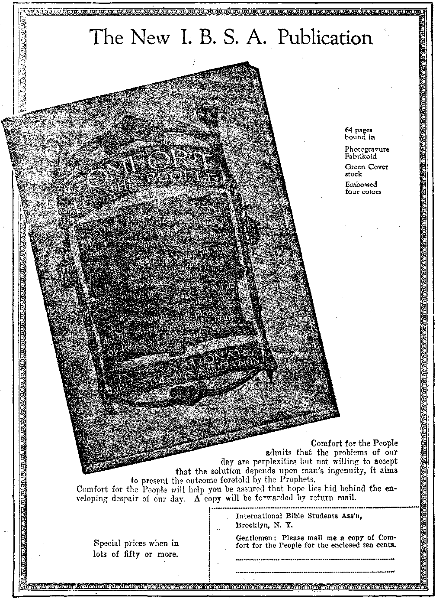

ww
PATRIOTISM
THE COMFORTER
ARE PLANETS INHABITED?
THE VALUE OF FRESH AIR
OLD 'VO'RLD DYING
Vol. VII Bi-Weekly No. 158
October 7, 1925
5$ a copy — $ 100 a Year
Canada and Foreign.Countries' $. 150
NEV
VORLD BEGINNING
<*t-............■........ ■■ ■ — ............
Social and Educational What Every Man Knows ...
Political—Domestic and Foreign Patriotism .....................,
Suppression of Opium in Formosa
Eloquence in Pueblo .......... . .
Science and Invention ‘ Are the Planets Inhabited?
The Intolerable Conceit of Evolutionists ...
Home and Health Three Recipes for.Making Whole-Wheat Bread ....... 12 The Value of Fresh Air
Travel and Miscellany More About Canada
A Miniature British Empire tn Mississippi ...
Thoughts on the Baat.bec Ruins ...
Copious Rains in Abid Spain ............
Religion and Philosophy The End of the World in 1925?
"LOCATION OF THE FlBST MISSING DlNK .....
Sudden Deaths of Infidels and Christians .
The Comforter ..............: ...... 26
Confirmations of the Bible.................
Published every other Wednesday at 18 Coneord Street, Brooklyn, N. Y., U. S. A. by WOODWORTH, HUDGINGS & MARTIN
Copartners and Proprietors Address: 18 Concord Street, Brooklyn, V. Y., U S A CLAYTON J. WOODWORTH . . . Editor ROBERT J. MARTIN . Business Manazer WM. F. HUDGINGS . . Sec’y and Treas.
Five Cents a Copy—$1.00 A Year Make Remittances to THE GOLDEN AGE
Foreign Offices : British.....34 Craven Terrace, Lancaster Gate, London W. 2
Canadian.....«... 38-40 Irwin Avenue, Toronto, Ontario
Australasian 495 Collins Street, Melbourne, Australia
South African......6 Lelie Street, Cape Town, South Africa
Entered as second-class matter at Brooklyn, N. Y., under the Act of March 3, 1879
BSSES
Volume VII Brooklyn, N.Y., Wednesday, October 7, 1925 Number 158
Patriotism By Lydia Q. Wentworth
IT WAS Abraham Lincoln, ,in his inaugural address, who said:
This country, with its institutions, belongs to the people who inhabit it. Whenever they shall grow weary of the existing government they can exercise their constitutional right of amending it, or their revolutionary right to dismember or overthrow it.
The same “unpatriotic” idea was also held by Kant when he wrote:
-All actions relating to the rights of other men are unjust if the maxims on which they are based are not compatible with publicity.
Garrison also wrote:
Moral influence, when in vigorous exercise, is irresistible. It has an immortal essence.
The words “patriot” and “patriotism” have been used more frequently during the past few years than they were a decade or more ago, owing to the sudden thrusting of the World War into our lives; and because this more frequent usage has always been in direct reference to claims and requirements of war, the meanings of these words have become so restricted in the popular mind that to most people patriot signifies only one who is willing to be in military and naval service or who approves of war; and patriotism is supposed to be shown only through approval of war and warlike activities.
It is greatly to be regretted that such restricted significance should be fastened upon words whose original meanings are so beautiful and are capable of such wide application. If you look in any standard dictionary for the words under consideration, you will find that patriotism is defined as “love of one’s country”; and that a patriot is “one who loves and is devoted to his country and its welfare”, or words to that effect. Yet the idea that one could do as efficient work and serve his country and prove his love for it as well by living and working for it as by dying or becoming a helpless public charge, in consequence of participation in war, would appear to be recognized by only an insignificant
minority. But who shall dare assert that there are not many deeds and activities besides those relating to war that are truly and deeply patriotic? ,
That to a person of liberal mind and culture the word patriotism is capable of much elasticity of application and does not necessarily signify approval of any special or concrete policy of goverment is well shown by a phrase in “The American Commonwealth”, by Lord Bryce, where he says: “The patriotism which is so proud of the real greatness of the Union as to acknowledge its defects.” And an excellent example of legitimate use of patriot is found iri a remark recently made about the senator from the far west through whose efforts the political scandal has been revealed which has so stirred our entire country. It is said of him that he was “denounced as a muck-raker in 1922, acclaimed as a patriot today”. May the idea penetrate deeply into our national consciousness that exposure of corruption in high places is genuine patriotic service! Instances of usage similar to those quoted should be constantly given to the public to offset the limited and deplorable idea of patriotism that now obtains. At present, instances of such usage are so few and far between that they make little or no impression on the popular mind whose one conception of patriot and patriotism is indissolubly connected with warlike activities. This common interpretation of patriotism implies tacit acceptance of the thoughtless and stupid slogan, “My Country, right or wrong,” which is in direct opposition to the noble interpretation exemplified by the quotation from Lord Bryce, and indicates an attitude of mind wholly at variance with the deliberative quality which the happy phrase of Lord Bryce assumes is capable of rendering mature judgment. Do we need to consider long and seriously to decide which type of patriotism we would prefer to represent! ' '
Wliat is represented as patriotism by leaders ■who strive-, to form public opinion at special or critical periods is merely a spirit of narrow nationalism invoked for political purposes. This confounding of a narrow nationalistic spirit with a patriotism that should be broad, liberal, generous and far-seeing leads to great danger. It was doubtless this misconception of patriotism that Dr. Johnson was excoriating when he declared, nearly two hundred years ago, that patriotism was “the last refuge of a scoundrel”. One cannot believe that what he had in mind was the feeling of combined longing and love that wells up in the heart of a wanderer from his homeland and his pride in the accomplishments and achievements of his people. And is it not that same unfortunate, one-sided and inadequate estimate that provoked Bertrand Russell to write, “It might come to be understood that patriotism is the blackest crime of which a man in our age can be guilty. A man who murders one man with his own hands is executed by the law, but a man who, by preaching patriotism, causes millions to' kill millions, is universally respected and has statues put up to him when he dies. Those of us who do not wish to see our whole civilization go down in red ruin have a great and difficult duty to perform— to guard our minds against patriotism.”
Such usage is all in keeping with the perverted and false significance that today befuddles the minds of people everywhere. For patriotism, as at present used, has direct reference to the upholding of policies of government by citizens whether or not these may be for the best interests of the people. Perhaps it is hardly to be w’ondered at that the populace should accept this ignoble meaning as the chief one, since it must be admitted that this has been held up before them for so long by leaders of opinion that the really comprehensive significance has practically disappeared. Yet the spirit of patriotism in its lofty and beautiful sense persists, in truth it cannot be destroyed, even if the wTord is degraded and debased; but why not rally to the saving of the word’s true meaning? In the same paragraph with the foregoing quotation, Mr. Russell says: “Nationalism cannot survive without false beliefs,” thereby giving conclusive proof that he regards patriotism and nationalism as synonymous. There is the mistake, as sharp discrimination should constantly be drawn between these two words. Nationalism can easily survive, but it should not be allowed to masquerade as patriotism. One other statement from the same paragraph of Mr. Russell’s article serves to elucidate still further my contention: “I mean that we should view impartially any dispute between our own country and another, that we should teach ourselves not to believe our own country superior to others, and that even in time of Avar we should view the whole matter as a neutral might view it. This is part of the larger duty of pursuing truth.” What does that quotation express but the very quintessence of patriotism, pure and exalted, in complete accord with the sentiment previously given from “The American Commonwealth” ? Lord Bryce affirms that patriotism acknowledges defects. Mr. Russell speaks of “pursuing truth”. How is it possible to pursue truth without acknowledging existing defects? And where is the high-minded citizens who would repudiate the ideal of patriotism designated by Lord Bryce?
The words country and government need clear defining and accurate usage as well as patriotism and nationalism. Country and gover-ment are not necessarily synonymous terms though government officials, politicians and their hirelings have so generally succeeded in making the ordinary person believe them to be. The patriotic fervor one may feel for his country does not of necessity include the government of that country. Instance Russia, Poland, Hungary, as familiar examples in past years of peoples where love of native land and countrymen has survived long oppressive rule and fired many a heart with strength for valiant resistance, for martyrdom if need be!
It is the spirit of nationalism that is invoked when it is considered necessary by those having authority to arouse the mob spirit in the populace under the plea that this is the time for them to evince their patriotism. The fact is that those are the times when a misconception as to the real significance of patriotism is given to the public and sways their minds. The far-reaching effects of the bigoted nationalistic spirit becomes apparent to one reading the analytical and instructive article by Prof. Harry Elmer Barnes, “Assessing the Blame for the War,” in Current History for May, where he says: “Serbia . . . was a backward political society, in which intrigue, murder and wholesale assassinations had not yet been transformed into orderly party government. It was also inflamed by an intense nationalism, fed by the sufferings and aspirations of centuries of oppression.” That is no true patriotism which breeds intolerance of other lands or of that love which other people feel for theii' native country. It is not patriotism, it is the spirit of nationalism that foments trouble. Patriotism, on the contrary, is not inconsistent with internationalism since patriots of other countries would have the same end in view, and mutual recognizance -would produce a spirit of mutual helpfulness and conciliation. It is nationalism that should be condemned, not patriotism. Patriotism begins where nationalism ends. The truth should be fully realized and widely broadcasted that one cannot be an intelligent patriot and approve all governmental procedures so long as a country’s government rests in the hands of men who are unscrupulous or self-seeking. When the seats of the mighty are filled by men and women whose only thought is for the advancement of the people there will be a different story! Let it be remembered that, if Washington, Jefferson, Patrick Henry, Samuel Adams and others of that period, who sympathized with the cause those men espoused, had been patriots in the present so widely-accepted meaning, there would have been no Revolution. They rebelled against their government and were, therefore, traitors! The Tories were loyal patriots!
From the earliest times people have continually been exhorted to be loyal to the existing government or have been forced into submission to it. Seldom in all history can be found the record of a ruler who felt it to be his great and glorious duty and privilege to apply himself unreservedly to the advancement of his people. Yet why should this not be! Always the people have been called upon to be patriotic. It might be suggested that it is as much the duty of a government to display patriotism in its attitude toward its people, to show devotion to their interests, as it is for the populace to evince devotion to their government. If a government does not make every possible effort for the advancement of its citizens, what reasons can be given for their devotion to it—especially when such devotion demands the sacrifice of their very lives? The prevailing unrest, the turmoil among laboring classes today in every land, not excepting our own, what is this but an expression by the people of a demand for reciprocity of patriotic sentiment between governors and governed?
In considering this subject from an unfamiliar viewpoint there is no slightest intention or thought of denying or detracting from the merit of what in the past has been esteemed the loftiest manifestation of patriotism. The nobility of spirit which yields self as sacrifice for love of country or humanity cannot be questioned. But ideas and ideals that have prevailed in past ages must give way before higher ones in a changed epoch. If we are to progress our customs must improve and our ideals become more advanced. One instance of such change is that duelling, considered a most gentlemanly method of settling disputes somewhat more than a century ago, has been abolished, or outlawed, through force of progressive opinion. In these times conditions exist similar to those which furnished the provocative causes for duelling a few generations ago. And human nature has not changed. Yet today it would not only not be considered an exhibition of bravery, or a necessity, for either of two irascible acquaintances to become a homicide to vindicate his honor; it would be adjudged plain murder punishable by process of law.
We must not lose sight of deeds of patriotism in bygone times that have had no connection with war, yet have given the strongest possible evidence of love of country and willingness to sacrifice self. One of the most widely known of these that comes to mind is the story of the little Dutch boy who sat for hours, nearly benumbed with cold, stopping up a hole in a dike to prevent the water from flowing through and flooding the country; and there are abundant illustrations of patriotic heroism that have been displayed by private individuals and by statesmen who have held their country’s welfare above personal aggrandisement—deeds wholly disconnected from warlike activities.
We have good cause to think seriously about the reason, or motive, for stressing with insistence the meanings so generally given to the words under consideration—that to be considered a patriot, or to feel patriotism, one must approve of war and militarism; and also why it is that, in popular acceptation and understanding, anypne who declares himself to be opposed to war, military service and preparation for war—in fact, anyone who maintains a firm and consistent belief in non-militaristic methods for the continuance and final establishment of peace—is called unpatriotic. Would anyone affirm that a war of aggression could by any amount of explanation be counted as a patriotic enterprise or act? But where do we find a nation willing to admit that it would countenance aggressive warfare? What government ever deliberately announces to its people that it is preparing to wage offensive, or aggressive, warfare? When, the time comes that war is favored by a powerful faction the machinery for instruction of the public is set in motion and the spirit of the people inflamed by deliberate propaganda. There can be no doubt of the sincerity of the feeling on the part of the people, but that it is roused by misrepresentation there is equally no doubt. Look back to the time of the Mexican War, denounced by William E. Channing, Theodore Parker, William Lloyd Garrison, James Russell Lowell and other public-spirited and courageous men, and women as well; and so bitterly denounced as an outrage and an unpardonable aggression on the part of the United States by Abraham Lincoln, then a representative in congress, that he barely escaped impeachment. Shall we judge that Lincoln was unpatriotic, even guilty of treason, as is said of war opposers in these exciting days ? Or who doubts today that he was truly patriotic?
For months before the outbreak of the World War every government in Europe knew that a tremendous struggle was coming—as did also many individuals who foresaw to what the governmental policies would inevitably lead. In France, Jean Jaures devoted himself with unstinted zeal to the task of averting the threatening conflict. His assassination resulted. Will anyone assert that, in spite of his opposition to the policies of his government, Jaures was not a true patriot, a lover of his country and his countrymen? Or can one honestly hold the conviction that those whose procedures doomed their land to vast destruction of property, the blighting or death of millions of young, aspiring lives and virtual bankruptcy of the nation were the real patriots—when it is known that if reason had prevailed all the horror might have been
avoided? In Germany, the renowned pacifist Nicolai, who, with a group of earnest friends, ceaselessly opposed the militaristic policy of his government, was imprisoned for his activities and barely escaped execution by managing to flee the country in an airplane. Were he and his associates the patriots or the German militarists who precipitated the war? In England the invincible pacifist who was treated with scorn, whom the powerful tried to intimidate and humiliate, yet who maintained his serene poise throughout all the terrible days of the war, is it his vindication that he now [1924] occupies the position of Prime Minister of the British Empire ? Will anyone venture to assert that he was less patriotic in those days than now, when he is bending all energies to the rehabilitation of Europe? It will doubtless be readily conceded that patriotism is a state of mind. How vital, then, in our present exigency, when decision for or against the possibility of future conflict is being settled, how supremely vital becomes the widespread recognition and immediate voluntary adoption of that state or attitude of mind whose applied policy would save the world from a repetition of the upheaval of 1914 to 1918! .
To raise the question as to whether or not war has been necessary in the past for cultural progress, as some authoritative writers have held, or has accomplished any good, is futile. No amount of discussion as to the merits of, or need for, past Avars can lead to any decision. A person who holds the opinion that Avars have played an important part in the Avorld’s history toAAmrd the dissemination of culture from nation to nation is not likely to be convinced of error in the main, even though he might be willing to admit that the conflict precipitated by France in 1870 led to trouble which has not yet been Aviped away and which certainly had no relation to cultural progress—except perhaps to retard it. The point to be considered is what need of the world can be supplied by war today or in the future, what substantial benefit can accrue to any nation or the AA’orld in general by the continuation of the system of organized collective homicide. And, unless distinct benefit to the human race, or some particular portion of it, can be clearly proved as a consequence of Avar, the question that arises is whether any citizen proves his patriotism best by favoring the eon-tinuance of war and militarism or by opposing them absolutely. A definite attitude is indispensable. There is no half-way choice or stand.
Love of one’s family neither implies nor necessitates hatred or even dislike for one’s neighbors. Love of community or state, and pride in them, need not engender animosity toward neighboring cities or states or remote ones. It is plainly for the benefit of individuals and families that they maintain pleasant relations with their neighbors and live at peace with them. The benefit is mutual. This same principle holds in regard to countries, and the oft-quoted example of the long unbroken peace between Canada and the United States serves as a powerful argument. History furnishes numerous instances of the union of small states for mutual aid or protection against invasion, though the lust for conquest on the part of a stronger nation has sometimes rendered such union futile. And in this our day and generation, in spite of the high degree of civilization of which we boast, it is the lust for conquest and possession that leads to bitter, ferocious struggle between nations. It is not that the honor of a country has been assailed that war is declared. Such books as “How Diplomats Make War”, by Francis Neilson, written when the author was a member of Parliament; and “Why War?” by F. C. Howe, for several years Commissioner of Immigration at the Port of New York; or “How the "War Came”, by the Earl Loreburn, give ample testimony in refutation of that untenable idea. If honor were at stake it ought to be universally agreed:
“That Honor is a holy thing, too dear To leave to the arbitrament of arms, To fatal hazard of chance shot and shell.”
The word honor is used as a pretext by which the uninformed people, en masse, can be roused to frenzy. It is disconcerting, to say the least, to imagine what could and might happen if people as a whole knew how completely they had been deceived regarding the underlying causes of the World War, which every accredited authority now informs us was a war chiefly of commercial rivalry. On the other hand, if such knowledge were suddenly to come to everyone, it might create nothing more alarming than such revulsion against war that no people could ever again be induced or even forced to wage war upon another people, but that they would reply to such a summons by telling their national leaders and the instigators of the war to fight their own battles and let the common people live their lives in the peace they desired.
War was not primarily, and never has been, an expression of the struggle for bread, as some writers have asserted. War is in no way related to the real struggle for existence by humankind. That fallacy should be most emphatically exploded. The struggle for existence is aided and supported by cooperation of individuals or societies of men combining against the common enemies of unhealthy or too rigorous climate ; poor soil; pestilence and disease; ignorance, vice and crime; the innumerable small pests that infest the vegetable kingdom whose products supply mankind with the essentials of food, clothing and shelter; and against other' circumstances and conditions of nature the overcoming and controlling of which enable the race to exist and progress. The struggle for existence has no connection with war except it be that war exercises an adverse influence upon this struggle by the slaughter of large numbers of individual members whose brain and brawn are needed for the common weal of their societies or race. Nicolai, than whom there is no higher authority, tells us in his “Biology of War”: “Eagerness to acquire property was originally the cause and object of war”; “Man, as even Aristotle knew, is from his very nature a social animal. Universal brotherhood among men is older and more primitive than all combat, which was not introduced among men until later.” After showing that animals of the same species never kill each other, for example, lions, tigers, swine, et cetera, he writes that: “War between creatures of the same kind is wholly unthinkable unless they are either cannibals or possessed of something of which it is worth while robbing them. This latter hypothesis is by far the more important of the two.” Then discussing instincts of human beings and drawing the conclusion: “This imperfect knowledge explains why we think it nobler and more honorable to be out of date, and consequently warlike, than up to date and peaceful,” he closes that section of the book by saying:
Would man but realize that there is nothing natural, nothing great, and nothing noble about war, but that it is merely one of the numberless consequences of the introduction of property! In short, war in. its essence is a business, like thousands of others, except that it is unnatural and assumes certain violent forms.. This, however, does not alter the fact that it is essentially the same thing.
It is not so very long since that the head of a business house as well as the leader of a troop of soldiers was called captain (capitano), so that the lieutenant of today need not look down so proudly on, a mere clerk. They are both brothers.
No apologies are needed for pacifists or pacifism today—rather it is the militarists who must defend their policy. The world has learned fairly well its lesson of what results from militarism and war through the desperate suffering of recent years, a long-drawn-out suffering whose sum total can never be estimated. This is no time to uphold the criminal system of government which permitted such an exhibition of savagery—displayed by the most cultured and scientific nations of the world. This is the time for all people who can think for themselves— think clearly—think logically—think sanely-—to declare that loyalty to country and countrymen is a far higher thing than submission to a government that would decree untold and endless suffering by continuance of a custom not only needless but wholly incompatible with reason, with morality, with religion and with civilization. Now is the time to recall and apply such messages as Lowell gives us in the lines:
“We owe allegiance to the state, but deeper, truer, more, To the sympathies that God hath set within our spirit’s core, .
Our country claims our fealty, we grant it so, but then Before Man made us citizens, great Nature made us men.
“He’s true to God who’s true to men; wherever wrong is done
To the humblest and the weakest, ’neath the all-beholding sun,
That wrong is also done to us, and they are slaves most base
VJhose love of right is for themselves and not for all their race”;
and the challenge of Theodore Parker in the ringing words: “I think lightly of what is called treason against a government. It may be your duty today or mine. But treason against the people, against mankind, against God is a great sin not lightly to be spoken of.” Need it be asked whether or not war is treason against mankind and God? For one who hesitates to avow a clear-cut decision perhaps no better answer could be found than the words of Garrison to his critics in the days of our sectional conflict, words as applicable to war in these times as in those:
. . . the peace principles are as beneficent and glorious as ever and are neither disproved nor modified by anything now transpiring in the country of a warlike character. If they had been long since embraced and carried out by the people, neither slavery nor war would now be filling the land with violence and blood. Where they prevail no man is in peril of life or liberty; where they are rejected, and precisely to the extent they are rejected, neither life nor liberty is secure. How their violation, under any circumstances, is better than a faithful adherence to them, we have not the moral vision to perceive. They are to be held responsible for nothing which they do not legitimately produce or sanction. As they neither produce nor sanction any oppression or wrongdoing, but elevate the character, control the passions and lead to the performance of all good offices, they are not to be discarded for those of a hostile character. ...
What is war? Is it not the opposite of peace, as slavery is of liberty, as sin is of holiness, as Belial is of Christ? And is slavery sometimes to be enforced—is sin in cases of emergency to be committed—is Belial occasionally to be preferred to Christ, as circumstances may require? These are grave questions, and the redemption of the world is dependent on the answers that may be given to them. . . . Eye for eye, tooth for tooth, life for life, is not the way to redeem or bless our race. Sword against sword, cannon against cannon, army against army, is it thus that love and good-will are diffused through the world, or that right conquers wrong ?
Basing my conclusion on accredited definitions I consider the words “patriot” and “pacifist” as practically synonymous. A pacifist is of course unalterably opposed to war; and as war is the most destructive and baleful force that can be brought against one’s country, invariably bringing other forces of injury and destruction in its wake, it would seem to follow logically that a true patriot, one wfliose dominant desires must be to save his country from ruin (the unavoidable accompaniment of war) must be a pacifist. To me the word country includes not merely its “rocks and rills” and “woods and templed hills”, not merely the land and water that are contained within its boundary lines, but its population and their prosperity. Anything that would undermine the prosperity of the people as well as what would devastate the soil must be regarded as a menace to be prevented by loyal patriots. That is why we need to increase the number of our staunch pacifists.
I repeat: The best patriot is one who strives to promote his country’s interests -and save it from disaster ; and what disaster is greater than war or has more far-reaching and sorrowful consequences physically, mentally and morally to individuals and economically to the nation as a whole ? It is time that the general public was awakened to the understanding that the highest patriotism consists in endeavoring to promote the best interests of one’s native land or chosen abode and that this can best be done by preventing the curse of war from blighting it. Anyone therefore who raises the cry of “unpatriotic” in reference to pacifist demonstrations or activities should be met squarely by the rejoinder that the pacifist is the truest patriot, since his endeavors are to save his country, and incidentally the world, from the crime which is the aggregate of all evils.
General John F. O’Ryan goes so far as to say, “I would be a traitor to my country if I did not do all in my power to abolish war.” The time has come for the public to be told and insistently taught that the generally accepted idea of patriotism must give way to a different one, the right one, a far higher and more inspiring ideal, one that will lead away from the horrors and destruction of warfare and its subsequent distress and anguish to peace and prosperity for every one. If enlightened public opinion abhors and condemns homicide of individual by individual should it not far more vehemently abhor and condemn homicide on a vast scale—the collective homicide of nation by nation ? The time is ripe, the day has come, for Avar to be outlawed without reservation or equivocation. Whatever purpose it may have served in the past, today it is an outrage upon humanity and decency. Peoples everywhere fear, dread and loathe it while they are still cajoled into believing in the false patriotism that asserts that to prove they have the proper spirit they must be willing to yield their lives by organized massacre. Again I insist this is not patriotism, it is a submission which can be successfully commanded and enforced only because the victims are ignorant of the actual truth. The truth is that Avar no longer serves any purpose but what is degenerative and demoralizing. It is the world’s greatest curse; and yet, though it stands threatening the extinction of civilization, perhaps of the human race, those Avho oppose it and avouIJ eradicate it from every system of living are dubbed unpatriotic by the ignorant mob that follows, like unthinking sheep, an equally unthinking leader!
No person who feels the slightest degree of concern regarding world peace need apprehend danger to any existing institution from agitation by pacifists, except danger to the inhuman system of war. The pacifist movement is humanity thinking in terms of social progress. Truth and right cannot be injured by exposure and discussion. Right will Avin out in the end though progress toward it may appeal* a snail’s pace. “Agitation is the marshaling of a nation’s conscience to mould its la.Avs,” said Sir Robert Peel. So the agitation noAv to the fore concerning pacifism will serve the purpose of arousing the public conscience and obtaining public judgment. We may rest content Avith the final verdict. If institutions and customs noAv prevailing- be true and right they will be maintained. If not, if a change for a loftier standard is to come, the sooner it arrives the better ! A pacifist is not a dreamer—is no mere visionary. He is a peacemaker, the most practical kind of person in this world, which will remain unpractical so long as government and men are dominated by the spirit of militarism and Avar; by a spirit of narrow nationalism, falsely presented as patriotism; by the idea that force can ever compel willing submission. The human mind is not so constituted or attuned that it Avill ever accept unjust dominance without rebellion. “The great need is an understanding of the nature and mechanism of human association, a realization of its more fundamental Iuavs,” as Norman Angell puts it. The philosophy of force, demonstrated so savagely by militarism and war, has had its day. It upholds destruction as a means of beneficial accomplishment. But is it not evident to the meanest intellect that the poAver of destruction serves no purpose at all? Are more proofs needed than we already have that the continuance of force in its application by militarism presages the possible extinction of humankind? Yet the hold of militaristic ideas is even now so strong on the uninformed multitude—people can still be so swayed by those whom they consider their superiors—that much effort is yet essential to prevent the possibility of future terrific conflict.
le
To prevent the curse of war from fastening itself again on the country we love we must exert ourselves to work against it till it is banished from the earth. All are needed in this great work. Youth and age alike can share in it and help hasten the day when peace and goodwill shall reign. For that time is sure and inevitable and, whether the force that will bring it be a moral or an economic one, the world is headed for universal peace. In spite of its long sad war history the change is coming, the end of warfare is at hand and the era of peace is ahead.
Bsooklyx, M. T.
In the natural process of events peace is bound to come—as were public schools and equal suffrage. It may be retarded by ignorance and stupidity—it cannot be prevented. And the day of its coming can be hastened by definite pacifist activity, individual and collective, on the part of every citizen who desires to evince patriotism of the highest type and loyalty to those ideals and principles which should be the foundation of every government—yet which, though claimed, are so seldom found in such operation as leads to the highest welfare of the citizenry.
WHAT Every Woman Knows, is the title of an article which was written by a woman and went the rounds of the press in May, 1925. The average husband was pictured as earning most of the money in the United States. His wife was pictured as spending most of what he earned. An article may be timely; its view may point to facts; and those facts may just be passing, in or out of time. Another point of view of the facts should now appear in the magazines under the title, What Every Man Knows.
In the article first mentioned Helen P. McCormick, for some time assistant district attorney of Brooklyn, N. Y., puts the case this way:
r Taking the coldest possible view of the matter; say a woman is married to a man with an earning capacity of $5,000 a year. He represents in terms of money approximately $75,000, yielding six or seven percent dividend. Let him become incapacitated, the $75,000 investment is wiped out.
To estimate the average husband as you would stocks and bonds is certainly the coldest possible viewpoint. To leave his wife entirely outside of this estimate, on such a really vital subject, is worse than a cold viewpoint. Certainly it is not fair. Who is using her money? What became of her earning capacity of $5,000 a year which she had single-handed before she married? Did she become incapacitated, or was her $75,000 investment simply wiped out when she became his “partner”?
Most men occasionally use enough thought to remember that times are changing; and time will answer these questions correctly. There was a time when the “capital” of the household brought home a portion of his earnings, with or without love and commanded his wife to begin and end at home, but to be sure to make both ends meet I He felt perfectly free to dispose of his other possessions as it pleased him, outside of the home. Perhaps those white wifely fingers had a perfectly good right to get into his trousers’ pockets in order to conserve his earning capacity.
It often happens that when the husband’s ever-decreasing store of latent energy falls below par, the good wife with the empty pocketbook manages to make the living for the whole family. Sometimes he hands her $10 for foodstuff and generously suggests that if she can strike a bargain and save a dollar out of it she might spend it on herself. Gratefully she takes the money; but sometimes she remembers that the top ten-center of each dollar has already been smoked off by the head of the house.
Father Time is now writing some good, straight words in our statute books, laws that are based on truth and justice. Marriage is coming to be properly regarded as a partnership wherein both contracting parties become joint owners.
Today, in the affairs of home and business life the average woman fearlessly meets the average man upon equal grounds. She frequently succeeds where he would fail, if conditions were made as severe for him as they are often made for her.
If we men would play fair we must pay due respect to our wives and treat them as partners. We will find much to esteem, much to love, and much less to complain about. Really a “part-net”, rich or poor, is the only type of man that -is worthy of a wife. >'
IS THERE life on any of the other planets of our solar system? This is a question that cannot be definitely and positively answered; the closest is merely conjecture. There have been arguments advanced on both sides of the question and arguments which seem to have some foundation. Mars and Venus have been special objects of study along this line. It is certain that there is no life on Jupiter and the planets beyond, for the period of axial rotation is so short and their density shows that they are still in a preparatory state, much the same as the earth was before the start of animal life.
With respect to higher forms of life on the planet Venus, it has been suggested that such is possible and highly probable. However, the great cloudy veil which hides the face of the brilliant planet forbids our looking thereon because of its impenetrable thickness, estimated to be thirty miles deep. It has been suggested that the surface of that rvorld would be full of oceans and very misty. Rains fall almost incessantly.
According to recent investigations Venus enjoys an average temperature of 113 degrees Fahrenheit, but a large percent of this heat is absorbed by the cloudy blanket. Evidently the temperature at the poles would be such as to warrant expectation of the existence of higher forms of life.
Science has made some interesting speculations regarding the forms of creatures on Venus. It is claimed that flying would be easy on account of the heavy atmosphere, therefore possibly aviation would be developed to a great extent. It is also suggested that the oceans are large and deep, the rivers swollen, and the continents consequently small. Hence, the Venusi-ans would have to be well adapted to water. For these reasons, at least, the conclusions are that if there are animals on Venus, they must be of the flying-fish variety. The ends of their wings could be formed so as to be used as hands, and their bodies arranged so that instead of skin there would be a scaly covering or, still differently, their flesh could be similar to that of a whale.
It is doubtful if the sun ever shines on the surface of the planet, and hence the Venusians must ascend to the lofty heights to get a glimpse of. that fiery orb, which would, of course, appear much larger than it does to us here on earth.
If the above speculations are anything near correct, what a dreary thing life must'be on tha planet Venus. Nevertheless, while it may seem so to us, we might be sure that the Venusians are perfectly happy in their environment. A fish could not be happy out of water, neither would a cat enjoy being in the water all the time. Contentment comes from trying, at least, to conform ourselves to our environment and making the best use of the opportunities we have. While conditions on the earth are not just conducive to happiness at all times, yet the prospects are that the time will come when such will be the case. At any rate, when a very gloomy day comes along’we might congratulate ourselves in that we do not have to endure conditions like that all the time, as the Venusians do. On the other hand we can see and enjoy the sun's light and heat most of the time. .
Nov’ as to Mars Camille Flammarion, the celebrated French astronomer, said:
I do incline to the belief in people on Mars. Its climate seems to be temperate in the main, more temperate than our earth; for their polar ice melts, and ours does not. You know how fiercely life will seize a chance to take root. Why not on Mars? Also their seasons change faster than ours. That means variety of crops—-food. The spectroscope shows, too, a composition much like that of the earth, with perhaps less water. Then there are these long, straight lines across its surface. These lines seem to have been made by sentient mind.
The late Professor Percival Lowell, of Harvard, believed that Mars is inhabited. He said:
I have absolute proof that the planet Mars is inhabited. Every discovery I make increases my conviction that Mars is not only habitable but inhabited. It is evident that in the canals the circumstantial evidence points unmistakably to local intelligence now dominant on Mars. The motive for them is the scanty amount of water on the planet. Water is necessary for human existence and water is scarce. There is a supply at the poles. Here is a motive of the most compelling kind, the primal motive of self-preservation.
Standing opposed to these ideas are the suggestions that the canals are not water channels, nor vegetation growing along water channels, but that they are either bands of moistened soil or vegetation growing thereon. The main objection to the above explanation is that w’e find the same kind of canals and lakes in certain sheltered regions upon the moon. The lunar canals are much smaller, however.
The late Professor W. H. Pickering stated that in order for these Martian canals to be visible, they would have to be at least twenty-five miles wide; and said he: “No race of the order of Ferdinand and Miranda could drive canals twenty-five miles wide the two thousand odd miles between the Martian poles and the equator.”
Professor Lowell wrote:
Look at Mars and you will see pictured the future fate of your own Earth, when by the insensible flight of the gases of the atmosphere, seas, rivers, and lakes alike will leave you, and nothing will remain but arid deserts and the wintry Arctic and Antarctic. Thence alone will you be able to derive moisture for the sustenance of the vegetation, which in its turn will sustain a more ethereal, wasted race of men; and like the Martians you too will have to build canals thousands of miles long, employing all the resources of your engineering skill thus to keep your pallid life within you.
In contrast to this worldly wisdom of one of the world’s wise men we have the more sure word of divine testimony concerning the earth, a testimony that is surer than all the worldly testimony put together. We have it in the Divine Word that “the desert shall rejoice and blossom as the rose”, and “in the wilderness shall waters break out and streams in the desert”.
Will there be life on the planets ? The affirmative answer to this question is the only reasonable one. The mighty mind that formed our solar system does not cause its planets to whirl through space for no purpose. Hidden in the pages of Holy Writ is the suggestion that in due time all the planets will be inhabited by intelligent, reverential, and happy creatures who will bring glory, honor, and pleasure to their all-wise Creator.
WE REPRINT, by request, the recipe for making whole-wheat bread, and two other recipes sent in by enthusiasts for getting well and keeping well:
THE KLEINHAUS RECIPE
Two cups of milk brought to scald, three tablespoons sugar, two cups warm water, one tablespoon salt, two tablespoons shortening, one Fleischmann’s yeast-cake, five cups whole wheat flour, three cups white flour, two cups bran. Mix the ingredients into one another, one after the other, in the order named. Let rise over night. In the morning put into pans and let rise once. Prick the loaves to release the gas and bake in a moderate oven.
THE ENRIGHT RECIPE
Dissolve one compressed yeast-cake in one-half cup warm water and let it stand until it bubbles, which will take about fifteen minutes. Then add this to one quart of warm water, together with one tablespoon of salt, one tablespoon of sugar and one tablespoon of shortening, and mix together. Then add two quarts of wholewheat flour and mix well. Set this to rise until it has about doubled its bulk, which will take from two and one-half to three hours. Then punch it down, and let it rise again until it has about doubled its bulk. Then put it into the pans and bake in a medium hot oven for a little more than an hour.
THE VANCE RECIPE
My bread is light and delicious. The day before I bake I put a small cup of flour into a crock or pan with a half cup of brown sugar. Mix this well at noon. Strain the potato water into this, mixing it smooth. I use about a quart of the water. When cook add one yeast-cake. I use Royal, first dissolving the yeast in a little warm water. Set aside to rise. If it is foamy by bedtime put1 into a cool place. It does not hurt to chill, once the mixture has foamed. In the morning make the dough in the usual W’ay, using whole-wheat flour or half Graham and half whole-wheat. In making the dough put in about a quart of new milk. It does not need to be quite so stiff as with white flour. Set to rise. This takes about one hour, as it does not need to be more than double its size. Make into loaves when it has risen once.
Do not let it rise too long. Have the oven hot for the first half-hour and cooler after that, This makes nice bread and gives a delicious nutty taste lacking in the white flour. I do not put salt into the potatoes when boiling, but add to the dry flour before mixing.
The Best of Reasons
Village doctor (to old elder): But surely, Saunders, you’ll have a drop of something before you go ?
Elder Saunders: No, thank ye, Doctor, I’ve three good reasons for refusing your hospitality. First, I’m chairman of the local temperance society; second, I’m just gaeing tae a kirk meeting; and, third, I’ve just had one.
The Value of Fresh Air
ONCERNINGr the cause and prevention of colds I)r. Harvey H. Wiley, former chief of the Bureau of Chemistry, Department of
Agriculture at Washington, D. C., once said: “It is a crime for anybody’s child to have a cold. A man came to me whose children all had colds, and wanted a cough medicine that did not contain alcohol. I told him I could tell him of a remedy that did not contain alcohol; that was to go home and put the windows of their sleeping rooms wide open. People in the far North do not have colds. But when they get back to civilization they have colds.” One would never have a cold if he did not breathe foul air.
“Sleep is nature’s sweet restorer.” While we are asleep nature does the repairing or renewing of our bodies. And in providing the right conditions for the renewing of our bodies we need the purest air, because the purest material is necessary for the rebuilding of all parts. While asleep we are very susceptible to poisoned air. Many people fear that they will take cold when the windows are opened in cold weather, or when going out on very cold days; when, as a matter of fact, pure dry air is extremely stimulating and prevents the taking of cold. The healing potencies in the pure air and sunshine with nourishing foods are now the great remedies for tuberculosis. Even in the coldest weather tubercular patients are kept outdoors most of the time, day and night.
The healing powers of nature are such that when allowed, they do infinitely more for her children than they could possibly do for themselves. Our best physicians admit that about all they can really do for a sick person is to keep him in the condition most favorable for nature’s healing. It follows, then, that the greater the physician the less he depends upon drugs, and the more he relies upon natural methods to heal. When one is suffering from the violation of nature’s laws, nature is trying to throw off the refuse matter of the body, to get rid of the excess poisons from overnutrition, food half-digested and only partially assimilated, and the broken down tissues of the body. To exclude the fresh air or to force more nutriment upon the patient is dangerous.
We all know how robust the American Indians were before they began to live in houses. As long as they lived in the open they -were exempt from many of the diseases which they now
By Mrs. Andrew J. Holmes
suffer from as victims of civilization. It would be a great benefit to any people if they would adopt outdoor sleeping rooms the year around. When the kingdom of heaven is established and we have a desirable government the people will not be allowed (neither will they be forced for economic reasons) to live in poorly ventilated houses and workshops.
No one can be in a strong vigorous condition without exercise in the pure air, and there is no substitute for brisk walking in the open air. Those who live within a mile or two of their place of business would find themselves invigorated for the day’s work and would keep in much better health if they walked to their work in the morning instead of riding. In vigorous outdoor exercise we are compelled to take much longer, deeper breaths, and we all know we are invigorated by this exercise. As a matter of fact, in ordinary breathing we bring only a very small part of the lungs into play; the apex of the lungs is not filled with air. The result is that the unexercised cells are not filled with air, but are filled with dust and irritating particles and inflammation is set up, especially if there is a tendency to consumption. Deep breathing is one of the most important features in building up a strong, vigorous condition of the body; and the lack of deep breathing is one of the reasons why we have so many weaklings.
There are many persons who do not know how to breathe properly. They do not inhale enough oxygen to be invigorated and build up the staying powefs so much desired and needful to meet the daily duties of life. To breathe properly the shoulders should be raised during inhalation, and the air should be slowly drawn into every quarter of the lungs and as slowly exhaled. A good breathing exercise is as follows: Slowly exhale through the nostrils until the lungs are almost emptied. Then slowly inhale until the lungs are full. Hold the breath a moment and then as slowly exhale. This will possibly cause dizziness at the outset, but persist until you can take a dozen full breaths without dizziness. You will find that this exercise will build health as no other physical exercise will.
The stooping habit formed by those working over desks or in stooping positions has reduced the lung capacity so much that their ordinary breathing is not deep enough to take in sufficient oxygen to completely fill the lung surface and
to properly aerate the blood. All the venous blood in the body is pumped from the heart against one side, of the lung surface. On the other side we breathe in air (which should always be pure) and through this delicate membrane of more than twelve hundred square feet (in adults) the exchange of the life-giving properties of the oxygen in the air and the poisonous carbonic acid gas, the debris, the worn-out tissues in the sewage blood takes place, thus transforming the poisonous venous blood into the pure arterial blood. This exchange takes place about twenty times a minute, thus showing the great importance of proper breathing of pure fresh air day and night. When you are breathing deeply and fully of the great lifepower you are taking in that great mysterious energy which is the life-giving quality of all breathing animals, including man. If every one would pay more attention to proper breathing of pure air, the health question would not be the serious problem it is today.
There should be a free circulation of pure air through our homes and workshops day and night; for when we close up a room the air begins to deteriorate and absorbs poisons exhaled by the occupant. The life-giving oxygen is consumed very soon unless constantly renewed by a current from the outside air. Our energy, our vitality, our life is dependent upon the air we breathe, and if this is insufficient or vitiated we suffer accordingly. The foul odors which we detect in a closed sleeping room are simply the poisonous excretions from the broken-down tissues of the body. They are deadly poison.
With an average of seventy beats a minute, the heart delivers to the lungs for aeration, five ounces of blood at every beat, or nearly 3,400 gallons a day. In other words, the lungs handle in twenty-four hours 105 barrels of blood. How necessary, then, that the air wc breathe should he absolutely pure. And yet, in spite of the tremendous task which the heart and lungs are called upon to perform in the aeration of the blood, it seems that men and women do everything possible to make the task more difficult.. The closed windows and doors, the unventilated homes, workshops, and foul air of public buildings, theatres, churches, depots, post-offices, etc., are a few of the handicaps which prevent the lungs from getting oxygen. ,
; If the body is to perform its normal functions unencumbered, oxygen must be freely supplied to the blood at all times; for according to reliable statistics the average amount of air taken into the lungs during ordinary breathing is about thirty cubic inches at each single inspiration. At the rate of eighteen breaths a minute, there would pass in and out of the lungs 777,600 cubic inches, or 450 cubic feet every day.
Surely, then, good judgment would lead one to choose as far as absolutely possible between pure air day and night, or poisoned, foul air. Only one lacking in common sense would hesitate to choose between the two. Yet every day we see people shut themselves away from the life-giving oxygen found in pure fresh air, and breathing over and over the same old air, poison-laden. A woman to whom I was talking complained to her neighbor about her bad feelings. She has not been out of the house for eight or ten months with the windows and doors closed, and the air reeking with tobacco smoke and other odors. Her neighbor told her that she was getting her purgatory for her sins, so she could not sympathize with her, and that if she did not deserve her purgatory she would not get it. The woman replied that she did not know what she had ever done that God should punish her so with poor health. How the devil has deceived the poor groaning creation into believing that God sends affliction upon them, when as a matter of fact all they-need is pure air and exercise to get their blood circulating!
The list of so-called “cold weather diseases” is a long one including, as it does, respiratory disorders that range from the “cold in the head” to pneumonia and consumption, the grippe, whooping-cough, measles, diphtheria, scarlet fever, the various throat troubles, and many other diseases. The season of cold weather must have something to do with these diseases, but does the cold weather cause them ? It is between the months of November and March that these diseases are most prevalent and that the death rate is the highest. Is the cold weather the direct or indirect cause of these diseases and of the high death rate during this period?
To keep warm is the chief aim of the average dweller in our northern latitude during at least six months of the year, and usually at the expense of his health. With the approach of winter he proceeds to fortify his home against the exhilarating winds and Jack Frost. And in so doing he gives very little, if any, thought to ventilation. Heat is the main thing; all else that appertains to health and hygiene is not considered. It is taken for granted that all the air needed gets in some way. But what the some way is, they do not take the trouble to find out. But proper ventilation does not creep in under the doors. It is accidental ventilation which is blown through the crevices between window sashes and which rushes in when the doors are opened. This does not supply all the pure, sweet air with its life-giving qualities so needful to maintain good health. Every breath of pure air means .additional strength and energy. And when we feel languid, sleepy, disinclined to exertion, we are living in an atmosphere that is lacking in the life-giving oxygen and charged with impurities seeking lodgment in weakened constitutions in which the powers of resistance to attacks of-disease have been reduced by inhaling a heated and foul atmosphere for months in succession. In such a condition one is more likely to be affected by diseases when one’s constitution is not able to resist them.
The conclusion that is reached in regard to cold weather ailments is this: Such diseases are only indirectly the result of the cold season. Their prevalence during the winter is largely due to our methods of housing ourselves during the cold weather. Instead of heating having the first consideration ventilation should be planned first, and heating second. There are indications of a general reaction against this form of criminality of coddling. The doctrine of pure air for healing of disease promises to become respected principally because physical cultur-ists have demonstrated the efficacy of fresh air in building up and maintaining good health. The doctrine of fresh air should be preached and practised by every one. But superstitions and ancient false theories die hard.
It will be objected by some that ventilation first and heating next in preparing our homes for winter will, during the cold months, bring discomfort to the healthy and be even dangerous to the delicate, old and young. But it will soon become apparent that objection to low temperature is due to a very great extent to the coddling to which the most of us have been subjected from childhood up, and that there was never an invalid or baby yet that was not benefited by being exposed to the bracing pure air of
winter ; that is, if they were kept warm by proper clothing. In the winter, when the temperature becomes lower and you feel the cold, all you need to do is add to your clothing by day; and an extra blanket or two at night should keep you as comfortable as in summer. "
It is well known by those who have made a study of the human body and its needs that fatigue and premature old age are largely due to a lack of proper oxygenation of the blood. In other words, fatigue is asphyxiation. If the tissues are not supplied with sufficient oxygen they become poisoned and die. One can see then how important deep breathing of pure fresh air is. As “blood is the life”, so oxygen is the life s of the blood. When we cease to breathe we cease to live. Oxygen is the basis of vitality. Just as oxygen is the elixir of life, so carbon dioxide is the great enemy of life. Every heart beat, every act, means the burning of body cells. Trie resultant ashes are a deadly poison, the elimination of which is the basis of good health and a vigorous physique. We know that it is the duty of the lungs to supply the blood with oxygen and to throw off from the body the carbon dioxide. Therefore deep breathing of pure fresh air is essential for building good health and strength.
Oxygen is to the human body what the draft is to the stove or steam boiler. Cut off the draft or free supply of oxygen from the body through shallow breathing or through impure air, and you smother the vital fire of life. This means that every nerve cell will become weak, sluggish, and finally die. It is oxygen which gives the sparkling redness to the blood; and this sparkling redness produces in a healthy person the rosy cheeks we all admire. It is oxygen that supplies the body with warmth and energy. Oxygen makes it possible for food to be transformed into bone, muscle and’tissue.
An adult breathes 2,600 gallons of air every twenty-four hours. The air which is expelled from the lungs is charged with carbon dioxide due to the union of the oxygen in the blood with the waste carbon of the body. The latter gas is of a poisonous nature and acts upon the human system very much as water does upon a drowning person—it suffocates by reason of its density ; for when taken into the lungs, those organs have difficulty in throwing it off on account of its weight.
More About Western Canada
TN YOUR issue of- The Golden Age No. 149, page 552,1 was interested in reading an article written by Mr. J. Bogard, entitled, “Western Canada As I Know It.” But after reading it carefully I came to the conclusion that Mr. Bogard was very much dissatisfied with Canada ; but I do not think that he has done it justice.
I have lived in Canada for over thirty years, and have seen all kinds of weather. I have lived from the eastern boundary of Manitoba to the Pacific coast, and I am at present in Alberta. I will begin from the first part of Mr. Bogard’s article and point out his mistakes:
Mr. Bogard disparages the realty literature which was distributed throughout the United States, Eastern Canada, and England in the early days. I can say that there were wonderful opportunities awaiting the new settlers in Canada, fifteen to twenty-five years ago. No doubt there were hardships to be met with; but show me the new country, with railroads as scarce as they were at that time in Canada, where settlers could expect to live in luxury right from the start. We must consider that regardless of what a man goes for in a new country he must anticipate a certain amount of hardship; and that is what makes a real man out of him. 'When he has to undergo a certain amount of hardship he appreciates the good things of life later on, when he becomes more prosperous and when railroads are built near him.
Does Mr. Bogard not realize the hardships that were undergone by the people that first settled in the United States? They not only had to undergo the hardships of a new and undeveloped country, but they had to fight the Indians as well. A new settler in the United States could not leave his back door without packing his rifle along with him. That is one thing we did not have to do in Western Canada, twenty-five years ago. We had no fear of redskins to ambush us and scalp us.
In Mr. Bogard’s second paragraph regarding the “Types of Immigrants” he does great injustice to Canada. To read this part of his article one would think that no one that was any good to other parts of the world would come to Canada. He would give us the impression that only outcasts came to Canada for settlement. But I can say that there are thousands of the very best type of men from the world over that
By J. Bilash '
came here and settled on the homesteads and made good. Besides getting their free land they had to take up a pre-emption for which they had to pay three dollars per acre; and many also bought adjoining lands. Thousands have worked themselves up until they are prosperous farmers who now own from one section to four sections of land. A section of land is 640 acres.
In regard to the land office scenes which your correspondent describes: It is true that many had to wait for several days at the land, office to open up; but how many prospectors have had to do the same thing in other countries during any gold rush? It is only natural. Mr. Bogard remarks that fifty or sixty percent of the first homesteaders left their homes before the three years were up. I would suggest that from eighty-five to ninety percent stayed with their farms until they improved their lands and got their deeds, and that ninety percent of the homesteaders stayed on and got new lands.
True these early settlers had to live crudely; but how many new settlers expected anything else in a new- country? Surely it is absurd for anyone to think that a new settler would expect every convenience of the city, such as hot and cold water faucets, electric lights, electric washing machines and a lot of up-to-date machinery which we have nowadays. In fact, if Mr. Bogard would think of it, there are many things that exist at the present time which were never thought of twenty-five years ago; and I believe that many were more content with their crude mode of living than thousands of the modern farmers of the present day who have all the conveniences of the city and autos to ride in, together with as heavy mortgages on their land and stock as they can carry.
It is true that the early Canadian markets were poor, and farmers had to put up with difficulties. That happens in all new countries. And as for hauling grain from ten to sixty miles that is also true. But how many hauled their grain over twenty miles since 1914? The railroads have been built throughout all the fertile country now, and throughout the three western grain provinces of Manitoba, Saskatchewan, and Alberta, there is now a network of railroads.
In regard to the “prairie social life”, which Mr. Bogard humorously describes: Again I say, iWhat could one expect in a new country? Did
Mr. Bogard expect to see modern Broadway theatres and moving picture shows in the Canadian prairies? But I am sure the average homesteader was far happier with his “prairie social life” than many at the present day, where scandals and divorces have replaced the simple social evenings of yesterday. And the farmers’ wives who went to milk the cows and feed the hogs are the women who made their husbands happy and successful in their farming.
In regard to the weather conditions in the Northwest: I have seen it as cold as 60° below zero; but I would far rather see the sixty below and dry, than zero weather and dampness. One does not feel the cold where the atmosphere is dry. I have been to the Pacific coast in and around Vancouver, B. C., and when the temperature dropped to zero I longed for the prairie, where it is dry; for the dampness seems to get you. I have seen winters in Alberta when we had less than six inches of snow, and people used their autos all winter. I myself played golf through the winter of 1923-24, with the exception of during the month of December. On the 7th of February, 1924, we played golf, and by the time we got to the second hole we had actually to discard our sweaters and play with shirt-sleeves rolled up.
Mr. Bogard remarks that the “left overs” that come from Canada into the United States are only a sample; but I prefer the real thing to the “left overs” that you get in the United States. Only a few days ago I read of the great heat wave in Chicago, New York, and all over the eastern part of the States, where people were suffering and dying from the heat by the hundreds; and here we Canadians were enjoying nice showers of rain, green grass and blooming flowers. I have no desire to abandon Northwestern Canada for the United States.
And I also notice that while we have an average winter weather, you in New York [occasionally] have very extreme cold.
Concerning Alberta, where Mr. Bogard says that drinking water is hard to get: I have never yet seen anyone suffering from thirst. There are several good wells in this district, and I believe there is no other part of Alberta where water is less plentiful. We are now having wonderful showers of rain, and the crops are looking better than they have for years. Wheat stands from ten to fifteen inches high, the best I have ever seen, although I am in the irrigated district. Most of the farmers are not depending upon the rain; they are irrigating just the same, but of late they have discontinued irrigating.
We have coal deposits here throughout Alberta, and many farmers get their winter fuel during the fall of the year by going to the coal deposits and digging the coal themselves, which costs them only their labor.
On page 557 Mr. Bogard remarks on “the boom and its aftermath”. Show me the country where such conditions did not exist during the frenzy of the Avar. Mr. Bogard makes remark that wheat was selling in 1923 for fifty cents per bushel, but he does not mention what grade of wheat. From my knowledge wheat was not sold for less than eighty cents per bushel in 1923, based on No. 1 wheat. The fifty-cent wheat Mr. Bogard refers to must have been hog feed.
I could write enough to fill The Golden Age about Western Canada but time does not permit me, and I may say that as a correspondent I am a failure, and I do not wish to bore the readers any longer. But I could not help saying something when I read Mr. Bogard’s letter. I was surprised that The Golden Age would publish an article so unjust to Canada.
TT IS a pleasure to look dandelion flowers over.
These lovely stars of the grass are really beautiful. In the heart of each is a study in exquisite, living, pink satin and creamy-green fur, a dear little nest with twelve or thirteen little lion-heads, their necks all fuzzy and damp; and one of the baby-lions, the center one, is always head and neck above his fellows, and is the first to attain his golden glory. They look upward mostly, waving back and forth, as though waving a love-offering to God for existence. The meadows, nature’s^emerald Wilton, gay with dandelions, make one think of the Golden Age, when everybody and everything will be cheerful and praising God, their Creator.
WE HAVE been working on some of the large plantations along the Mississippi river. Most of the tenants are colored; and, as we are canvassing the white people almost altogether, we do not see many in one day.
Some of the colored people tell ns that they are working for good men who treat everybody right, while others tell us that they get very little of the benefits of their labors.
One colored woman insisted that we come back in the fall, saying, “Lots of the colored folks clear thousands of dollars and soon waste it. They had better buy good books with some of it.” But I am inclined to believe a large proportion of them have a hard, time of it, as do poor white tenants, here and elsewhere. There is so much dishonesty in both colored and white (white profiteers) that it is impossible for us in our imperfection to see and tell the story accurately.
There is one large plantation around Scott owned by a company of Englishmen. It is a British empire covering forty thousand acres. ) The company bought all the land the state would allow them, and endeavored to buy other farms through other men; but the authorities prohibited them from doing so. “This is the largest plantation on earth,” we ■were told.
The farm hands are all colored, with seventeen or eighteen white overseers. The roads, and also a street in the town of Scott, whereon a few colored live, are posted: “Peddlers, canvassers and other trespassers, keep out. D. & P. L. Co.”
The colored are given their necessities through the year, but dare not ask for a settlement when the crop is sold. If one desires to move off the plantation, he must slip away in the night; for they are not allowed to move out of the “empire”. White people on the outside of this plantation told us these things.
So here is a British empire with a system of peonage operating in Mississippi, U. S. A. The company operate a large saw mill, have their own doctors, hospitals and stores.
YOUR recent article on corroborative evidences of antediluvian giants comes as an answer to my thoughts about the marvelous white marble ruins of the temple city of Baalbec, sometimes callecLBaalbele. One of my sons was in Palestine last March. He and his wife made a tour from Egypt through from the Pyramids to Jerusalem by motor car to Tiberias and then on to Damascus. They visited Baalbec and spent the day at the ruins. He has brought me back a fine book of engravings, thirty in number, of the German excavations of the huge stones and temples. They are beautiful specimens of the finest chiselling in cream white marble.
I am looking at them as I write this to enable me to describe them. The far-famed six white marble pillars or columns are still erect and a wonder of symmetry and height. The capitals ornamented with beautiful chisellings of acanthus leaves, delicate frieze ornaments, beautifully decorated doorway to the great court, etc., and all the blocks of marble cyclopean size, also a beautiful circular temple, decorated wall in the
is
RllinS By Mary Davie (England)
vaulted cellars, temples to various mythological deities, and the huge mass of debris at the feet of the standing architecture, make up a most imposing scene covering a great extent of the plain. Behind in the distance is Mount Hermon,. with the beautiful sunset colors on the heavens. This makes a most sublime effect, and solitude reigns over all.
My son described it to me so that I could see it all. He said: “The stones are enormous, sixty-five feet long, fourteen feet deep and twelve feet in breadth and each weighs over 700 tons. There is one which weighs over 900 tons, and these stones are ground so exactly that placed one on top of the other you cannot insert a piece of paper between them. The biggest crane in existence today will lift only 200 tons. No one has yet given a convincing explanation of how they were ever brought down from the quarries and put in position. They are the biggest stones in the world. From the area covered by the temples I should think you could put several of St. Peter’s in Rome inside.” .
I have copied this description from his notes.^
My son did not discount the remark I, as a Bible Student, made to him. I said I believed that the builders were the giants mentioned in the 6th chapter of Genesis, verse 4. He replied; “Oh, yes, before the Deluge.” And so I feel sure that the fallen angels designed the architecture and that their hybrid human sons cut the marble out of Mount Hermon and by some power they possessed built up these huge and magnificent works of grandeur; and no doubt this occurred in other parts of the earth where similar gigantic buildings and temples are being discovered. The waters of the Flood subsided, leaving these testimonies of God’s wrath on the debased race who had built them, and they are coming to light in these last days to prove the truth of Genesis and of His wonderful plan. This is a very bald description of the photogravures of Baalbec as I see them before me. I wish I could send you the book, but my son said that I must let him have it again; for of course he values it highly.
Referring to The Watch Tower of June 15, Lucifer must have been created a glorious spirit being of marvelous beauty and great intelligence. His pride in it caused his fall, and therefore one can well believe that he led a number of angels with him in his fall and that these obeyed him. I would think that he caused them to w’orship him, and that when they fell from their first estate they built such temples as Baalbec and had wicked rites in those temples, which were the ultimate worship of Baal—Lucifer himself; and that thus the origin of all the ancient idolatries and their later Babylonish worship culminating in Papacy. Of course Noah and his sons and daughters must have known, all about this Baal worship.
[Translated from the. German edition of The Golden Age, Number 31]
THE University Museum of Philadelphia has made rich findings in latter times in Beisan, Palestine. In the Old Testament this city is called Beisan, or Beth Shean. (Joshua 17:16; 1 Samuel 31:10,12) It was known to the Greeks as Scythopolis; and later the Crusaders named it Basan. For a long period of time this very ancient city was held by the Canaanites against Israel; it was also for a certain period under the rule of the Philistines, but not until after the death of Saul and his sons.
The Americans excavated not less than eight buried cities before they penetrated to an Egyptian fortress dating from the time of Pharaoh Seti I (1313-1291 B. C.). The most interesting findings are inscriptions which date from the time of Seti I and his son, Barneses II. On the latter is inscribed the statement that the Pharaoh compelled the children of Israel to furnish for him a levy (tribute of men) and to build for him in the Eastern Delta the two cities of Pithom and Raamses. Joseph was dead at the time, and the Jewish nationality seemed to spread too much in Egypt.
This statement confirms the thought that the great Barneses (the Sesostris of the Greeks) was truly the same Pharaoh mentioned by Moses in the book of Exodus as the oppressor of the children of Israel.
The older inscription contains some very interesting details regarding the military organization of Palestine during the time when that country was an Egyptian province. It enumerates as garrison of Beth Shean four divisions; viz., Ba, Amen, Sebak, and Bah [four godheads], which took part in the battle of Kadesh against the Hittites in 1295 B. C.
From the same date were found various sarcophagi of clay, their covering representing the form of human heads. Of these the feminine are adorned with large wigs.
In the fortress were found traces of a Greek settlement dating from about the year 400 B. C., and also numerous statuettes, pieces of large statues, Mosaics, and coins, the latter especially of Pharaoh Ptolemy Soter, 323-285 B. C.
Suppression of Opium in Formosa
WHEN Japan obtained control of Formosa there were 167,500 opium smokers in the country, but by a method of gradual suppression the number has been reduced until there are now only 35,000 and no fresh permits are issued.
A SUBSCRIBER in Texas says that the papers in his section are “accusing the Russellites of predicting the end of the world in the year 1925”. He wished us to say something about the world’s destruction; so we wrote him as follows:
' “In reply to your favor of Sept. 13: Practically the only people in the world who believe that this beautiful, bright, green earth of ours will never be destroyed are the members of the International Bible Students Association, who have been doing everything they can for fifty years to convince the people of the world that no such destruction would ever take place. Pretty nearly everybody else on earth believes that this earth is sometime to be literally destroyed. Bible Students do not believe that this will take place in 1935, or any other time; but The Golden Age does not know of any way in which it can prevent people from lying about them. Do you?”
IN A letter to the Philadelphia Public Ledger, Mr. E. A. Dos Santos, of that city points out that it is the evolutionists, and not the supporters of the Bible that are showing the intolerance in the discussion of this question, and the merest glance at the columns of almost any newspaper ought to make this plain to everybody. He states the matter well:
From a reading of your editorial of May 14 criticizing the Tennessee Legislature, and also the extracts on another page from the textbook containing the teaching of evolution prohibited by the Legislature, does it not look rather as if it was the dogmatic teaching of the textbook that is intolerant and the action of the Legislature in prohibiting it an act of rebellion against that intolerance ? .
Is it not a fact that the evolution of the human race from lower animals forms is nothing better than an unproved hypothesis?
And does not this book unjustifiably teach that it is a proved fact? Do not the extracts exclude any other idea ?
Is it not intolerance to exclude all mention of that part of our information about evolution that goes to show that it is a false theory in the opinion of eminent scientists ? ■
Is not this a false pretense and callous indifference to scientific truth as well as intolerance?
Does it not amount to hoodwinking the child population into a blind belief in evolution not warranted by the known facts?
If the evolution of man is not proved, and no reason to think that it ever will be, and if the teaching it to children falsely as a proved fact tends to undermine their belief in religion, then why the headlong hurry to teach it to them at all?
And why condemn the Tennessee Legislature for taking this common-sense view of the matter?
Location of First Missing Link
ABOUT two years ago an adventurous yachtsman started for Java and the Malay archipelago, to find the missing link. But he returned without succeeding. An eminent American biologist is reported to be in the East Indies, at present, on the same quest. If they cannot find a living specimen, they will be content with a skeleton or even a skull. They are all on the wrong track. I authorize The Goijdeh Age, if it so wishes, to announce that what is required is an asbestos-clad explorer in a gas-proof submarine who can reach purgatory. When purgatory is found the missing link will be found occupying the choicest corner lot, right in the center of that domain; for the missing link must have been the first to get there, not being an
By John A. Mackaye
animal and having come to some measure of responsibility. Probably his animal relatives neglected to pay the price to get him out; but a “drive” could easily raise the fund that will be necessary to pay for his translation to happier surroundings. Owing to the link having had an overdose of purgatory, because of this neglect, it might be a thoughtful thing to canonize it, when found, say as St. Swivel. That is a turning link, is it not? They might give St. Swivel a saint’s day—for instance the thirty-first of February of the year before last. For the benefit of would-be explorers this information is given without charge. Purgatory always reminds me of the “Pay-as-you-leave” streetcars. So explorers would better have the wherewithal to get back to earth.
IN Acts 19:13-16 we read: “Then certain of the vagabond Jews, exorcists, took upon them to call over them which had evil spirits the name of the Lord Jesus, saying, We adjure you by Jesus whom Paul preache th. And there were seven sons of one Sceva, a Jew, and chief of the priests, which did so. And the evil spirit answered and said, Jesus I know, and Paul I know: but who are ye? And the man in whom the evil spirit was leaped on them, and overcame them, and prevailed against them, so that they fled out of that house naked and wounded.” This happened at Ephesus.
Something not altogether unlike it recently happened on this continent. The first part of the incident was the sending of the following letter.
The outcome of the matter was that on February 17th, 1925, the gentleman, Mr. Coade, to whom the letter was addressed, had a hemorrhage and died while at a meeting of the Pentecostal Church here in Montreat
ELD. <5. T.HAYWOCD. Publisher.
INDIANAPOLIS. INDIANA. U.S.A.
TELEPHONE KE-NWOOO 434«
January 20, 1925.
Mr. F. G. Coade, 90 St. Genevieve St., Montreal, Que., Can.
Greeting in Jesus flame:
Your letter received and its contents noted. We were sorry to hear of your sad condition but God is able to deliver you. It was the 19th chapter of Acts that evil spirits were cast off of people through annointed handkerchieves and aprons. We are sending you an annointed cloth in the Name of Jesus to cast off the evil spirit from you.. May God bless you and give you faith to cast it off in Jesus Name. ■ " '
Yours in Christ Jesus,
THE Roman Catholics of Colorado are raising money for a seminary. They have recently had big meetings in Denver and Pueblo to assist in raising the funds. At the meeting in Pueblo the Rev. John B. McGuran among other things gave expression to the following ■which, in view of the Roman Catholic church’s age-long advocacy and practice of tyranny over the masses and their subjection to pitch-black ignorance and superstition, is about the richest thing we have seen. The Rev. McGuran said:
Where did. the Declaration of Independence come from in the first place? It came from the mother church originally. She has saved and preserved it for mankind, the same as she has preserved the doctrine of love. [! ! I]
We want you to join in with us in this great crusade. Why? So that we can save America. Why is there so much ignorance in the earth? Because of the lack of priests, those who break the bread of life. [! ! 1]
These statements are enough to make Ananias come to life to defend his title.
Copious Rains in Arid Spain
By L. Berry (England')
THE enclosed item from the London Baily Mail, of May 30th, may interest you. You will see that since Judge J. F. Rutherford got into Spain and delivered his refreshing message there copious rains have fallen in that arid country. Is it Jehovah fulfilling His Word? But note as usual the Devil, in the opening sentence, takes the honor to himself. The dispatch reads:
Madrid, Wednesday. Following an intercession service at Saragossa, heavy rain fell.
Plentiful rainfall in other districts of Spain has saved the crops threatened by ruin owing to the drought. In the north one district had been without rain for three years.
The Morning Star
WESTWARD the “California Limited” was wending its tireless way. A sudden stop, a rude jolt, aroused me from restless sleep. My first thought was, “An accident!” But no! 'twas but our engineer “'spotting” his train at a water tank.
For a moment or two I lay in my berth in warm delicious coziness, then drowsily bethought me that it might be time to get up and dress for breakfast. I switched on the electric light in my darkened section. It was just five o’clock. I raised the window shade; and as the train got under way again I gazed at the passing scene.
Not a human habitation was in sight. All nature slept. The soft grays and tawny browns and reds, with the misty purples of the distant horizon, appealed to my artistic sense. As far as the eye could reach, the ruthless hand of man had left no scar upon the breast of mother Earth. It was all so beautiful, so peaceful, so wondrous-ly still; not a sound save the whirr, whirr, whirr of the swiftly turning wheels, as they pressed along the steel highway.
- I looked heavenward. What a sight held my enchanted gazeI
The waning moon,; like a bowl of burnished silver was set high in the eastern sky; and just
By G. W. Seibert.
below, hung Venus, the morning star, a drop of liquid crystal spilled over the moon’s pale brim!
The morning star, forerunner of the sun, bright herald of the oncoming day, proclaiming, “The dark night is over, the morning is come! Awake, 0 sleeping earth; the day is at hand with its work, its sorrow, its joys!”
Venus, the ancient “goddess of love”! Enraptured I drank in the scene, while my thoughts turned toward the kingdom, so nigh; even now it is at our doors!
Primarily, the morning star would seem to symbolize the Lord Jesus himself, at His second advent, the King of kings and Lord of lords, the glorious Light-Bringer of a better day!
Again, methought, how like the Lord’s people on earth today! Are they not proclaiming, “The day is at hand, the dark night of sin and sorrow is almost gone, the Sun of Righteousness shall soon arise with healing in his beams! The kingdom of heaven is at hand! The golden age of prophecy is here, with its golden rule of love! Love to God, to our neighbors; yea, even to our enemies!” . . / , <: . -
The golden age of prophecy by holy men foretold, When right shall triumph o’er the wrong of centuries grown old;
When in the desert springs break forth, wastes blossom as the rose, «
And health and happiness are borne on every breeze that blows; .
When sin and death shall pass away, and every human heart
Be filled with love until this earth shall seem of heaven , a part.
' # * *
Ah! then, poor world, come dry your tears, and banish every fear,
Lift up your heads, rejoice and sing: The golden age । is here!
i Even as I watched the dawn grew brighter and more bright. The sun was slowly, majestically, rising in all its effulgent glory. The silvery moon grew dim; the morning star shone more and more faintly, until at last it vanished from my sight!
Again I was reminded of the Lord and His church. I remembered how John, the forerunner, had declared of Jesus, “He must increase, but I must decrease."—John 3: 30.
As the rising Sun of Righteousness grows more and more luminous in the heavens, the last members of the body of Christ become less and less prominent, until their final message: “Behold! the King and the kingdom are here,” having been proclaimed, “as a witness to all nations,” they shall disappear from mortal sight and pass “within the vail”!
Ah, -yes! They must decrease; but He must increase, and “of His kingdom there shall be no end." And it shall be “the desire of all nations" I
THROUGHOUT the world, in the past few months, there has been considerable notice in the press of what many have looked upon as the hand of God in connection with the sudden death in London of the Chairman of the Rationalist Press Association, on the evening of May 4th. In the United States the matter was usually presented about as follows:
London, England.—Almost immediately upon resuming his chair after making a bitter attack upon Christianity, George Whale, Chairman of the Rationalist Press Association, keeled over against the table, and in a few minutes was dead.
The startling occurrence took place at a dinner given In London recently to observe the centenary of Thomas Huxley, and to encourage the campaign against Christianity. The last few minutes of the infidel’s life were devoted to a ruthless attack on the Christian religion and against Protestant ministers. The speaker ridiculed the Holy Ghost, made fun of the New Testament and belittled Christ and His teachings. The more than 200 guests at the banquet cheered the blasphemous phrases and laughed heartily at his slurs against Christianity, but five minutes later they saw him sink in death. Their shouts turned to hushed whispers, smiles left their awestruck faces.
One of their number had arisen to propose a toast to the chairman, glasses were lifted high, an outburst of applause was breaking forth, when a sudden hush fell, and all eyes turned to the leader. They saw him slump forward in his chair. The banquet was at its close, and already the orchestra was striking into the strain of the opening dance. But the presence of death stilled the instruments. No official announcement was made of the tragic happening, but the word quickly passed about the crowded room, and the guests, by common consent, quietly departed. George Whale had solved the mystery of the universe and discovered whether he, or the Man of Galilee, knew best whence comes the soul of man and whither it goeth.
We are indebted to our London correspondent for a copy of The Literary Guide, which reveals to how great an extent the above dispatch conceals the truth and distorts a reasonable and natural occurrence into a miracle. In the end such distortions always do harm to the truth.
In the first place Mr. Whale was an old man, five years beyond the seventy-year span of life. In the second place he had heart disease and had been warned by his physician to discontinue attending banquets and giving after-dinner speeches. In the third place he did not mention the holy ghost, nor the New Testament, nor Christ, nor the Creator. In the fourth place his collapse did not occur while the orchestra was playing, but while the next speaker on the program was delivering an address. In the fifth place, if it were true that the 200 guests were in accord with Mr. Whale’s speech, and he was struck dead because of the speech, then justice ■would seem to have required that the guests should share his fate. And in the sixth place an explanation should be forthcoming at once as to why William Jennings Bryan met with such a sudden death immediately after standing up for the Creator as he did at the Scopes trial in Tennessee.
Believing that it will be of interest to our readers we give a few extracts from Mr. Whale’s last speech. An examination of these shows that he was, as he thought, seeking truth, and believed what we also hold to be correct; namely, that the greatest opponents of truth are the clergy.
Indeed, we think it quite probable that it was because of Mr. Whale’s opposition to the clergy that his sudden death received such wide publicity. But those who regard his sudden passing away as an act of the Creator punishing him for such opposition have a nice problem to explain the equally sudden death of William J. Bryan. Mr. Whale said in part:
You will have read to-day a speech from the Prime Minister at the Academy Dinner. It reminded me of the experience of a British artist in Rome who saw a ■Titian, which he bought, as he thought it a great bargain. In Italy the rule is that pictures may not be taken out of the country without special leave; but he had no scruples, so he painted over the Titian a portrait of Victor Emmanuel, and smuggled the picture out to England. Then he set to work to wash off Victor Emmanuel, but as he washed him off he also washed off the Titian, and below that he saw a portrait of Garibaldi. That is the sort of thing we are always trying to reveal ourselves—to wash off Protestantism and come to Catholicism, to wash off Catholicism and get back to the animistic religions. All these things are connected together. The later ones are the developments from the earlier ones, and it is that doctrine of development which we want to preach. We do not attack Christianity; we explain it.
It will be observed that Mr. Whale and his friends had the thought that Protestantism and Catholicism had a common origin in demonism. Well I What of that ? John Henry Newman, who was first a bishop in the Church of England and then a cardinal in the Boman Catholic church, in defending the use of holy water and other elements of the Roman Catholic ritual, admitted in a work which he wrote that originally they were “the very instruments and appendages of demon worship, though sanctified by adoption into the church”.
Mr. Whale and his friends merely made the mistake of accusing true religion of the misdeeds of the clergy. Hear him again, this time speaking of Canon Ainger of the Church of England, and poking mild fun at the bare-legged holy ballets recently danced at St. Marks-in-the-Bouwerie church in New York city:
In a notebook left by him .[Canon Ainger] and not published in his lifetime, he said that the clergyman is at the best a man in blinkers, who must not receive any lateral impression. What a faith! Do we wonder that the number of men willing to come forward and take holy orders is declining? Do we wQpder that the number of our fellow citizens who enroll themselves members of the church and who have votes at the elections of their Assemblies is less than one-seventh of the adult population of England? And yet they have the impudence to call theirs the national church. . . .
I see that my friend Major Putnam is here to-night. In the city of New York, which he knows so well, I read that lately they have been trying to galvanize Christianity in an extraordinary manner. A rector has provided a harp, a trombone, and an assembly of girls with bare legs who dance Greek dances; and he said that these Greek dances did no end to .symbolize the development of human souls, and that great quickening was expected to arise from that. But I am sorry to say that the bishop of that diocese has interfered, and is rather tending to check those services. Go to St. Paul’s, Covent Garden, and you will see the drama services there in full flight. You have it in many other churches too. And they are so successful that the Archdeacon of Lincoln has refused to allow the singing of the well-known hymn, “0 Paradise, 0 Paradise, Tis weary waiting here.” (Laughter.) He says the people do not want to die, and of course with such celebrations as these going on what hope can there be for any hymn of faith such as that?
From the wild accounts published one would expect that the most dreadful of all the things Mr. Whale said were reserved to the latter part of his discourse, and hence we print that in full, with some supplementary remarks from The Literary Guide, merely remarking that, like many other good men, including many of the clergy, Mr. W’hale was in error in thinking that the Bible teaches the doctrine of eternal torture. When he wakes up and finds that such is not the case he will, without doubt, be glad to come into hearty accord with the Lord’s kingdom. Meantime he is asleep in Jesus, and not in any danger from the errors of his friends or the malice of his enemies.
Before I sit down 1 want to ask you,if you hayp.recently been to the Church House. Some one says “Yes.’’’ It is good to be there. In the last four months they have put up a copy of a wall-painting. This wall-painting is a fine full-blooded exposition of the faith of the good and of the wicked. It would have delighted that greatest of all haters, Dante. The descriptions that you get in his Inferno are found there again—the wicked crossing the bridge of spikes; some tumbling into Hell; others pulled down by demons; a dreadful cauldron with the wicked in it, the devils pushing them in with pokers; and below the flames fiercely blazing. And this, not any kind of gentle thing, but this particular picture, is the thing which they selected for the Church House. It justifies us in asserting that, in spite of the shyness of some ministers in regard to eternal punishment, that doctrine is still a living one. Since I have seen that picture, which I went to see as a matter of religious duty, I have been looking at the question as to whether this doctrine is now actively taught. Many Christians will tell you it is not. They are, as I say, ashamed of it, and they venture to ignore their plain texts on the subject. But if you will refer to a work by Dr. A. E. Taylor, Professor of Moral Philosophy at St. Andrews, entitled Faith and the War, which was published for our encouragement in 1916, you will find that he says that there is a Hell or something like it, adding: “If there were not, I could not respect my Maker.”
Then there is the Rev. Dr. Campbell, who once wrote a book entitled The New Theology. Dr. Campbell says we are apt to make too light of eternal punishment. Another theologian, Bishop Gore, says that there will be Hell and probably annihilation for those who are perversely wicked. Dr. Hastings, in his great Encyclopaedia of Religion and Ethics, says that the doctrine of Hell is undoubtedly the teaching of Holy Writ; and we may take it that those who are prepared to reverence their Bibles are bound to teach or acknowledge that today as in any former time. It may go in time; you may think it is going already, but it is going slowly. Not until the clergy cease to teach the doctrine of Hell will we cease to oppose it. When, it goes entirely much will go with it, because there is no doctrine which is more definitely taught in the Bible. But when it goes, what can be the authority left for the sacred and inspired book ?
It is sometimes said that people, especially of the ■ younger generation, are becoming, not pious in the Christian sense, but less interested in some of the questions which interest us. Perhaps we are doing something, like all reformers, to make ourselves superfluous; but that time has not come yet. There is still work, as I have been endeavoring to show, for Rationalism to do. As the need of this negative work dwindles, the work of a positive sort of Rationalism will have largely to take its place. We need not fear that when they go the. world will not get on very well without theological dogmas. Men wiU recognize that there is an unknowable, a mystery upon which it has been said that the thing for man to do is to be content to restrain himself within the limits of the comprehensible. We need not be afraid of any result of that, for we know that altruism is quits as old and as natural as egoism, and slowly becomes stronger amid mankind. Future generations will need the light not only of a negative but also of a positive Rationalism. In that light, as I believe, man will amend and enlarge and purify his conceptions of religion. He will cherish such utterances as William Kingdon Clifford’s: “Do I seem to say: ‘Let us eat and drink, for to-morrow we die’? Far from it. On the contrary, I say: ‘Let us take hands and help, for this day we are alive together.’” (Loud applause.)
Proposing the toast of “The Chairman ”, Major G. H. Putnam said: “It is my pleasing privilege to rise to propose the health of your Chairman and your President. It is worth coming three thousand miles to have the opportunity of saying only in part what I think of my dear old friend, your President. I recall Goldsmith’s word about Samuel Johnson. He said Johnson was a great man, but Johnson could not have written properly about animated nature. He would have made the little fishes talk like big whales. I belong to the former group, and I only wish I could talk with the charm and humor of my friend, the great ‘Whale’ who has just sat down.”
It was at this point that the Chairman was taken ill and removed from the Dining Room, Major Putnam remarking: “I am wishing more than ever for the health of my dear friend, George Whale.”
Mr. Edward Clodd announced a few minutes later that the Chairman was suffering from a fainting fit, and then asked the guests to disperse. He was sure that they would agree with him that under the painful circumstances dancing should be abandoned. Later the fateful news was communicated that the beloved Chairman had passed away.
It. is true that Mr. Whale was an unbeliever in the Christian religion; and, like most of the clergy of our day, he was wholly an unbeliever in the Bible as the Word of God. Although this made him, in our eyes, unwise, yet The Literary Guide says of him editorially what we wish could be said of every Christian, i. e.:
George Whale was truly one of nature’s noblemen. He was possessed of all the virtues, and of failings he had hardly any. Only those who were privileged to know him intimately can fully appraise his wonderful character. He was meticulously conscientious in all things. Whatever he undertook to do he did thoroughly. No labor was too great for him. Although more than once warned by his medical adviser that in consequence of his heart trouble he must be severely cautious in taking part' in evening functions, his sense of public duty was so keen that he dared all in order to carry out the commitments to which he considered he was pledged.
[Radiocast from Watchtower'WBBR on a wave length of 272.6 meters, by Judge Rutherford.]
WHEN great calamity befalls a person sorrow and grief result. When one is bowed down with great grief and woe he craves some comfort.
A comforter is one who administers comfort or consolation to the sad or sorrowful. A comforter, therefore, is a real benefactor.
Comfort means to impart good cheer, consolation and strength to those who are in want or any distress.
When one is sad or in great woe and distress the countenance is distorted and dark. When such a one receives comfort the countenance changes and radiates brightness. Comfort is therefore an embellishment of the mind with things or facts that bring good cheer to the heart. ■
The whole world for many ages has experienced such sorrow. By far the greater portion have gone down to the tomb in grief, leaving behind loved ones to sorrow for them, only in the course of time to follow the same weary way.
The great prophet Moses, speaking of the adversities of man, said (Psalm 90: 9,10): “For all our days are passed away in thy wrath; we spend our years as a tale that is told. The days of our years are threescore years and ten; and if by reason of strength they be fourscore years, yet is their strength labour and sorrow; for it is soon cut off and we fly away.”
This morning I want to speak an allegory based upon facts known to every person of much experience. It pictures conditions of the human race in sorrow and the vain attempts of human influences to comfort the sorrowful. - -
John Bright and his wife, Sarah Bright, owned many houses, had numerous men servants and maid servants, had great herds and flocks and possessed riches in abundance. Their chief joy was centered in their children. They had a son, who was strong and vigorous, happy and bright. In his youth they hedged him about with every possible protection. His physical, mental and moral training was the best that they could provide. He was a handsome lad, and his manners were charming. He was kind, dutiful and r bedient to his parents. In school he always held the head of his class, in wisdom none others measured up to his standard, and in eloquence of speech he surpassed all of his fellow students.
The parents set great hopes upon the future of their son.
He had a sister only two years younger than he. She was beautiful, bright and accomplished. Her delight was to please her father and her mother. The two children were the joy of the Bright home. Even the neighbors pleasantly spoke of the family of Brights.
Neither of these children had ever united with the Catholic or the Protestant church. The day of their graduation at college came and both finished with high honors. They were the pride and joy of their parents.
On the evening of that self-same day a great storm destroyed their flocks and herds and a fire devoured their property and left the parents penniless. In that great fire both the children were caught and burned to death. The parents were overwhelmed with grief. Their sorrow knew no bound.
A Protestant clergyman was called in by the parents with the hope of receiving some consolation from his words. The virtues of their two bright children were related to the clergyman. The parents had hopes that the two obedient children would surely have something better and that they might see them some time in happiness. After delivering himself of much pious wisdom the clergyman solemnly asked the question: “Did these children ever profess religion and unite themselves with the Baptist Church ?” “No,” answered the parents, “they did not. We have never been able to determine whether the Baptist, Methodist, Presbyterian or some other church was right. We brought our children up to be honest and good. They knew nothing about what is taught in the churches.” The minister, with a look of despair upon his countenance, shook his head and replied: “There is no hope for them. They must spend their eternity in a hell of fire and brimstone, there to be tormented forever and ever.” He withdrew.
Desperately seeking for some consolation a Catholic priest was called in by the parents. The virtues of their beloved dead were related to him with a hope that they might find some balm for their sad hearts. The priest listened attentively while the parents told of the accomplishments and excellencies of these children, and then in response to his question also stated that they were not Catholic. No, the children had never united with any church denomination, they told the priest.
The verdict of the priest was, “These two children of yours are now in purgatory and are suffering much pain and anguish, but prayers may be said for them, and if this is done they can be released from purgatory after many years.” The parents were then told by the priest that in order for these prayers to be said so much money must be paid for each prayer. “But,” replied the parents, “suppose we have no money to pay for these prayers ? The great calamity that has befallen us has swept away our fortune and we are penniless. What shall we do ? Must the dear children remain in purgatory unless we can provide the money?” “Yes,” answered the priest, “they must continue to suffer there.”
The parents received no consolation from this clergyman.
To perish in a great fire was bad enough, but then to be told by two clergymen that this fire was but the beginning of suffering of their beloved children made the burden of the parents too grievous to be borne. Were these two ministers comforters? They w’ere not. Could they have brought comfort to the sad hearts of this father and mother? Had they known and told the truth as it is set forth in God’s Word they could have brought thetn much comfort. These clergymen missed the greatest opportunity of lifting a terrible burden from two sad hearts.
For more than 1500 years cases similar to the one I have related have constantly occurred. During all that time the clergy have been giving the people this kind of comfort. They have told those who have joined their church denominations that after they died they would go straight to heaven, that the others must go straight to hell or purgatory. If there is any difference between the message of either, the Catholic has the better. But would it not be a great travesty if only those who are able to get the money could get their beloved dead out of purgatory? Would it not be even a greater calamity if God is dependent upon the prayers of some poor, imperfect man to get others out of purgatory? Does it not appeal to the reasonable mind as absurd that one man could pray another out of purgatory? An honest man c^uld not worship a God who would permit himself to be commercialized. Prayers to get people out of purgatory said for pay is obtaining money under false pretenses.
During all these centuries darkness has covered the earth and gross darkness the people and they have not known the truth. A few have heard of the truth of God’s wonderful plan and been comforted. Why have not all known the truth? you may ask.
St. Paul answers in 2 Corinthians 4:3,4: “The god of this world [Satan, the Devil] has blinded the minds of the people [by false teachings], lest the glorious good news of Jesus Christ should shine into their hearts.”
Whom has he used to do this blinding? I answer : Those who have mistaught the Word of the Lord. Why did God not restrain these teachers from teaching error? I answer: Because it was not His due time. He has permitted the preaching of the truth by the humble-minded in order that the truth itself might gather out from the world a few who would devote themselves to Him and His cause; and thereafter, as the Scriptures declare, the message of truth shall go to all the people, that all may know the truth. We are now entering that time; and soon all the world shall know the truth, from the least to the greatest, and that without having to pay cash for it
The Truth
OW my purpose is to relate briefly to you the truth as set forth in the Word of the
Lord and to show you that God is the great Comforter; that Jesus Christ is the express image of the Father, and a Comforter, and that all who have His spirit can be comforters.
Why should men die at all? The Scriptures answer: Because the first man, Adam, who was perfect, violated God’s law and was justly sentenced to death, and all his children were born thereafter, therefore born sinners. Every imperfect creature is a sinner, and not entitled to live.
Had these two Bright children been permitted to die because they were sinners? Did not the facts show that they had been good and dutiful and kind? I ansv/er: They were not sinners as Adam sinned, but they were born imperfect, therefore without the right to life. They did not die because they had sinned, but because they were the victims of a calamity. But, you ask, why would God permit them to die at all?
I answer: Because they inherited the death penalty through Adam. Had they joined all the churches in the land or any of the churches in the land, would that have kept them from dying? It would not. The fact that they did not join any church, did that mean that they went to hell or purgatory? I answer: No, because there is no such thing as eternal torment. Hell means the tomb or grave. Purgatory is a human invention, which has been worked overtime for revenue only. It has no foundation in reason or in the Scriptures.
Hear what God’s prophet said to a sorrowful parent under similar circumstances: (Jeremiah 31:16,17) “Thus saith the Lord, Refrain thy voice from weeping, and thine eyes from tears: for thy work shall be rewarded, saith the Lord; and they shall come again from the land of the enemy. And there is hope in thine end, saith the Lord, that thy children chall come again to their own border.”
Death has always brought sorrow to the hearts of those left behind; and for the consolation of those who would hear the Word of the Lord, St. Paul wrote the following (1 Thessalonians 4:13-18): “But I would not have you to be ignorant, brethren, concerning them which are asleep, that ye sorrow not, even as others which have no hope. For if we believe that Jesus died and rose again, even so them also which sleep in Jesus will God bring with him. . . . Wherefore comfort one another with these words.”
The Plan
RIEFLY now I wish to relate the plan of God in order that we may see why those who have hope in His plan sorrow not as those who have no hope.
Millions of children have died who never committed any wilful wrong; but they died because of the inherited condition that came upon mankind. They are not conscious after death. The Scriptures declare, “The dead know not anything, . . . for there is no work, nor device, nor knowledge, nor wisdom in the grave.”—Ecclesiastes 9:5,10.
God has provided, through Jesus Christ, a great ransom for mankind. Ransom means a corresponding price. It was Adam that sinned and brought death upon all; Christ Jesus, the perfect man, died for alt Concerning this we read the apostle’s word in Hebrews 2:9: “But we see Jesus, who was made a little lower than the angels, for the suffering of death, crowned with glory and honour; that he by the grace of God should taste death for every man.”
Also the apostle says in 1 Timothy 2:3-6: “For this is good and acceptable in the sight of God our Savior; who will have all men to be saved and to come to an accurate knowledge of the truth. For there is one God, and one mediator between God and men, the man Christ Jesus, who gave himself a ransom for all, to be testified in due time.”
The death and resurrection of our Lord Jesus provides the redemptive ransom price for all. But you will notice the scripture says that this must be made known to all in due time.
From the time Jesus was on earth until the coming of His kingdom is known as the period of the gospel, during which time the Lord gathers out His church, which is composed of the members of His body. This does not mean the Protestant or the Catholic church. There have been some of His church in both these denominations and some outside of all. Church means a called-out class. There have not been many called out. They have first heard and believed the message of truth, and having accepted it, consecrated their lives to the Lord, and consistently tried to follow in the footsteps of the Master. Concerning them Jesus says that just a little flock are they.
The mass of mankind have died in total ignorance of God’s plan. Such are not responsible for this ignorance. One might say: Why, have not we churches on almost every street corner and do not the bells sound out every Sabbath morning to warn the people to come to church? I answer: That is true, but when they go do they hear God’s plan or do they hear something entirely foreign to it? Church buildings and church bells could never save anyone, nor could they educate anyone. Jesus says: “Sanctify them through thy truth; thy word is truth.”
The two Bright children never had a chance for life, because they were never taught the truth of God’s plan. They were not reprehensible; for they had not been taught the truth. Doubtless their parents were in the same condition.
How could these parents have been consoled or comforted in their hour of great distress? I answer: By telling them that Jesus Christ had tasted death for the whole human family and that their children were not conscious in torment in purgatory, hut were at the time dead, unconscious, knowing not anything. The parents could have been told, as the Scriptures teach, that the children were asleep in Jesus. By that is meant that death is spoken of in the Scriptures as sleep.
Jesus, having bought the entire human race, in 'due time will wake the dead out of the death condition. The Apostle Paul plainly says to those who are sorrowing (1 Thessalonians 4: 13): “I would not have you to be ignorant, brethren, concerning them which are asleep, that ye sorrow not, even as others which Save no hope.”
The very purpose then of telling them the truth is to bring consolation or comfort to their hearts. Then the apostle adds that God, through Jesus Christ, will bring back all the dead. The Lord Jesus said the same thing. When He was on earth He said: "Marvel not at this; for the hour is coming, in the which all that are in the graves shall hear his voice, and shall come forth.”
Again the Lord’s Word tells us in Acts 24:15 that there shall be a resurrection of the dead, both of the just and the unjust.
The allegory which I have related to you is fashioned somewhat after the allegory in the book of Job. After Job’s three would-be comforters (whose counterpart is found in the clergymen) had made his burden even more grievous to be borne, then Elihu, who without doubt represents the Lord’s Word, spoke. Elihu depicts the miserable condition in which the human race finds itself today. 'Some of his words follow (Job 33: 21, 22): ‘‘Man’s flesh is consumed away, that it cannot be seen; . . . his soul draweth near unto the grave, and his life to the destroyers.’ That is really the condition of the world of mankind.
Then Elihu adds: "If there be a messenger with him, an interpreter, one among a thousand, to show unto man his uprightness [this great Messenger here mentioned is Christ, the One who makes plain the Word of Truth in God’s due time]; then he [God] is gracious unto him [man], and saith, Deliver him from going down to the pit.”
Man’s response then, according to Elihu, is this: “I have found a ransom [a redeemer].”
Then Elihu describes what shall be the condition of those that are obedient and how they shall receive the blessings of the Lord.
I remind you again that all must come to a knowledge of the truth before they can accept the truth, and this knowledge is a knowledge of God’s Word. It is the message of the Lord, His Word, the truth that brings comfort and consolation to the hearts of the sorrowful; because His .Word teaches that when the kingdom of the Lord is in full operation all the dead shall be awakened out of death and have a fair opportunity for life everlasting; that the families that have been broken up by disaster, sickness and death shall again be united. The Lord would have us to gather consolation and comfort from these promises now. The true Christians during the age have been comforted in this way. Writing to them St. Paul says (2 Corinthians 1:3-5): "Blessed be God, even the Father of our Lord Jesus Christ, the Father of mercies, and the God of all comfort; who comforteth us in all our tribulation, that we may be able to comfort them which are in any trouble, by the comfort wherewith we ourselves are comforted of God. For as the sufferings of Christ abound in us, so our consolation also aboundeth by Christ.”
Thus we see from the Scriptures that Jehovah God is the great Comforter ; that the message of consolation proceeds from Him and that He, through Christ Jesus His beloved Son, brings comfort and consolation to all -who believe His Word. Then the apostle shows that each one who is thus made glad by knowing the truth of. God’s Word is enjoined to pass the message of consolation on to others. This is why he says that the Lord comforts us in our tribulation that W’e may be able to comfort them which are in any trouble by the comfort wherewith we ourselves are comforted of God.
It is a defamation of God’s Word and His holy name to tell the poor sorrowing ones that their beloved dead are in fire and brimstone or purgatory. It is worse than untrue. It not only makes the sorrowful even more sorrowful but it destroys hope and turns their minds away from God. A reasonable mind would say: If God is such a fiend as to torture my children, who have done good, then we want to know nothing about such a God. Because of false teaching of His Word the minds and hearts of many honest people have been turned away from the Lord.
The duty of the Christian is to teach the Word of the Lord to the sorrowful and thereby comfort the hearts of those that are sad. The message of truth will bring gladness to everyone who knows and understands it. The prophet describes the joy that will come to the hearts of the people during the reign of Christ as they begin to receive their dead from the tomb. He says (Isaiah 35:10): “And the ransomed of the Lord shall return, and come to Zion with songs, and everlasting joy upon their ! heads: they shall obtain joy and gladness, and sorrow and sighing shall flee away.”
Every Christian should be a comforter and take a delight in passing the message of truth on to others. Those who have died without a knowledge of the truth will be brought back to earth and given a full knowledge of the truth in order that they might learn the way of life and eternal happiness.
THE Saturday Evening Post of May 30,1925, contains a most interesting article by Frederic F. Van de Water, entitled “A Cloud of Witnesses ; They Come up out of Egypt to Support the Bible Story.” It is a scholarly article, but written down to the level of the comprehension and appreciation of the average man, and well worth reading by everybody.
The article has to do with discoveries of 10,-000 manuscripts and fragments of manuscripts in the Eayum district of Egypt from 1887 A. D. onward. A large proportion of these are written in Koine, the identical form of the Greek tongue in common use throughout the Roman empire in the days of our Lord. Fifteen volumes have been published; fifteen more will be needed. They shed a flood of light upon the meaning of certain New Testament expressions and prove positively the reliability of those writings.
Scholars have denied that the New Testament was written in the first century; they are now confronted with dated manuscripts showing positively that the form of language in use during that century is the language in which the New Testament was written. Some items regarding certain passages follow.
The expression “blotting out the handwriting” is now found to mean literally “washing out the handwriting” and refers to a custom of washing one record off the papyri so that another could be put in its place.
The expression “sealed” means literally “packed and marked for shipment”.
The expression “babbler” means “one who gathers scraps of food from the table”.
The expression “schoolmaster” means “pedagogue—a trusted slave who conducted the children of a household to and from school”.
The expression “evidently set forth” means “placarded”.
The “beam” in a hypocrite’s eye becomes a “splinter”.
Besides mentioning the discoveries in Egypt Mr. Van de Water reports the interesting information that statues of Mercury and Jupiter have been unearthed in Lystra, where Barnabas was called Jupiter and Paul Mercurius; that Tarsus, the birthplace of Saul, was a university town and a center of the tent-making industry; that in Pergamum an altar has been uncovered bearing a dedication “To the Unknown Gods”. Many other interesting facts are stated.
Mr. Van de Water says:
Among the earlier fragments of religious writings, no explorer' has discovered anything contrary to or out of harmony with the New Testament. In the later centuries there were innumerable childish distortions of the gospels, remnants of which have been recovered; but the closer the copies are to the times of the disciples, the more certain is the harmony between them and the accepted versions of today. Higher critics have assailed the credibility and the authenticity of the New Testament hard and often, but the attacks have been based upon hypotheses and deductions drawn from negative or indirect evidence. There have been gaps and obscurities in the trail along which the Scriptures have traveled down to us and skeptics have tried to fill these lapses with doubt and discredit. Yet, as archasological discoveries continue, as facts take the place of theories, direct evidence sustains not the critics but those simple men who recorded the life of the Lord and the missionary efforts of His immediate followers. Conviction grows that they dealt with that most immortal of substances — truth.
With Issue Number 60 we began running Judge Rutherford’s new book, "The Harp of God”, with accompanying questions, taking the place of both Advanced and Juvenile Bible Studies which have been hitherto published.
4610n one hand we observe the employers who own the factories and the mills and who employ the laboring element to do the work, striving to curtail their expenses, reducing wages, discharging men, resulting in millions being out of employment with no means of earning a livelihood for themselves or families. On the other hand is the laboring class of men, who have received their employment at the hands of the wealthier, and who are distressed in mind. And because of the injustices heaped upon them they are becoming more restless each day and are threatening to take complete possession and control of the factories and mills and mines and operate these themselves. The political classR striving always to do the will of the financial powers, are perplexed and frightened as to what to do, yet constantly acting in a vain attempt to help their allies in the great beastly order; while the apostate clergy, who go to make up the third element of the beastly order, are trying to induce the order-loving people to unite themselves with church systems and thereby support the employing class.
452These various elements, selfishly exercising what power they have, are going from bad to worse, leading on to a great disaster for the unrighteous systems of earth. Jesus points this out as the final and conclusive evidence of His presence and of the end of the world, saying, “Then shall be great tribulation, such as was not since the beginning of the world to this time, no, nor ever shall be. And except those days should be shortened, there should no flesh be saved: but for the elect’s sake those days shall be shortened.” (Matthew 24: 21, 22) The Prophet Daniel corroborates the words of the Master to the effect that in this time of trouble the great Messiah will manifest Himself and put into operation His kingdom. He says: “And at that time shall Michael [God’s representative, the Messiah] stand up, the great prince which standeth for the children of thy people; and there shall be a time of trouble, such as never was since there was a nation even to that same time: and at that time thy people shall be delivered, every one that shall be found written in the book.”—Daniel 12:1.
463The world is madly rushing on now to this time of trouble. It is the time spoken of by the Prophet Haggai, who says: “And I will shake all nations, and the desire of all nations shall come: and I will fill this house with glory, saith the Lord of hosts.” (Haggai 2:7) And when this great shaking is over, then the desire of all nations and people will come; namely, an honest, righteous government, administered in behalf of mankind under the supervision of the great Messiah. The Apostle Paul refers to this time as a time of great shaking, which immediately precedes the full establishment of the Messianic kingdom. (Hebrews 12:18-28) The Lord by His presence is bringing to light every hidden thing. The apostle foretold it would be thus, saying, “Therefore judge nothing before the time, until the Lord come, who both will bring to light the hidden things of darkness, and will make manifest the counsels of the hearts.”—1 Corinthians 4: 5.
QUESTIONS ON "THE HARP OF GOD”
Describe the actions of the employing and the laboring classes, fl 451.
How are all these perplexed? fl 451.
To what is this disturbed condition leading? fl 452.
Is there greater trouble just ahead? and if so, what proof have we? Quote the scriptures, fl 453.
What will follow this general shaking of the nations? fl 453. (
How is the Lord’s presence revealing the hidden things ? Quote the Scriptural authority for your answer, fl 453.
Sing! O Zion!
Arise, 0 Zion, praise thy King, And make His name thy trust.
With joy and triumph loudly sing; For He is true and just.
0 Zion, sing with tuneful voice Thy great Redeemer’s praise;
In His almighty power rejoice Throughout eternal days.
